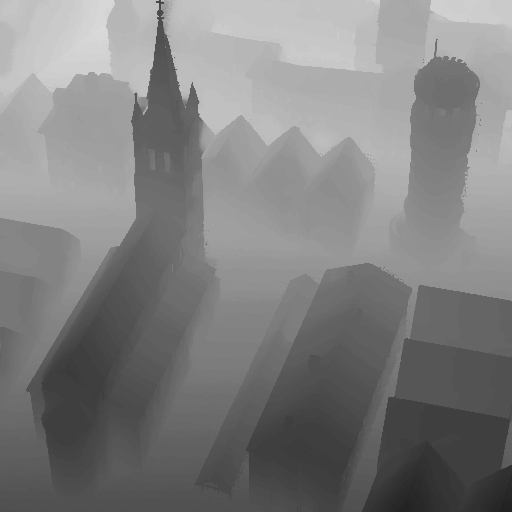
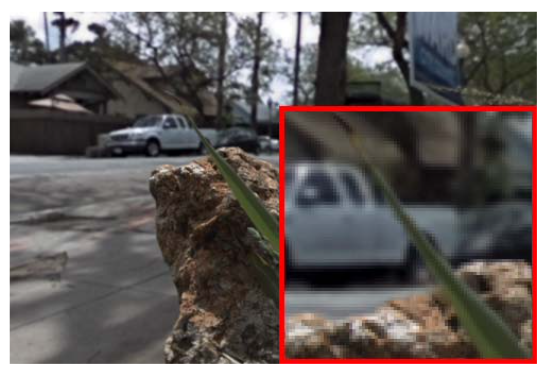
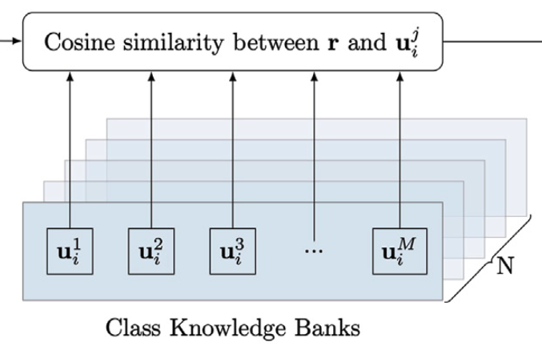
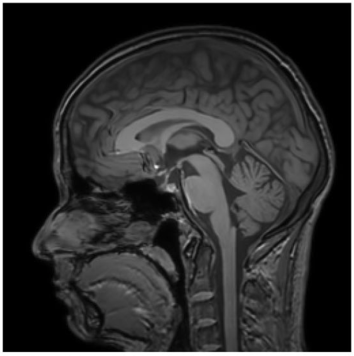
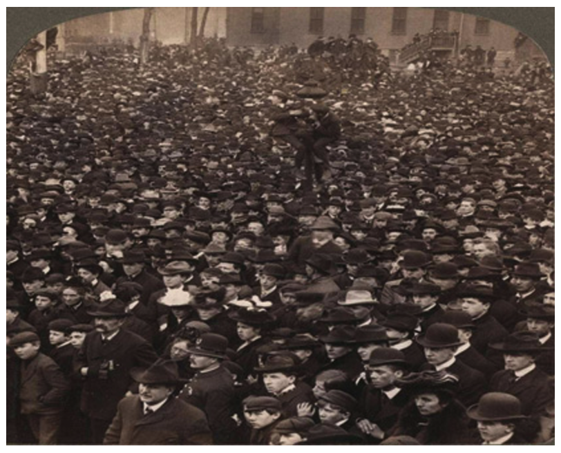

Kang Han
I am a PhD candidate in computer science at James Cook University, Cairns, Australia, where I am supervised by Porf. Wei Xiang and Dr. Eric Wang. I am currently a visiting PhD student at La Trobe University, Melbourne, Australia. My research focuses on light field reconstruction and neural rendering, which aims to reconstruct the 3D world from 2D images.
Research


Inference-Reconstruction Variational Autoencoder for Light Field Image Reconstruction
IEEE Transactions on Image Processing, 2022
Kang Han, Wei Xiang



Image Crowd Counting Using Convolutional Neural Network and Markov Random Field
Journal of Advanced Computational Intelligence and Intelligent Informatics, 2017
Kang Han, Wanggen Wan, Haiyan Yao, Li Hou